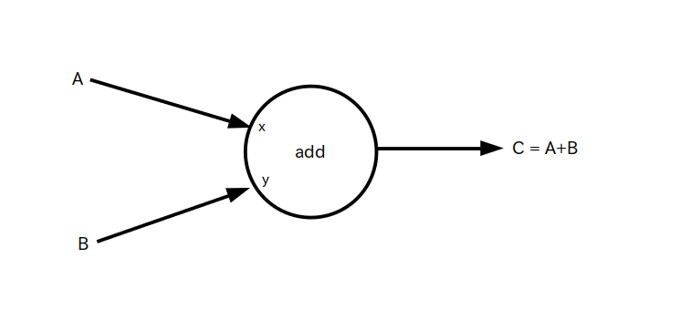

○ ・・・ オペレーション(Operation) : 入力されたテンソルに対して演算処理を行い、演算結果のテンソルを出力する演算ユニット
矢印・・・エッジ : テンソルが矢印の方向に流れる
(注) 一般的なデータフロー・グラフでは「オペレーション」のことを「ノード」と呼んでいます

Java や C/C++ の様な命令型プログラミングと異なって、「データフロー・グラフ」と呼ばれるグラフを設計し、そのグラフにデータを流す(フローさせる)ことで演算を行うというスタイルのプログラングのことを「データフロー・プログラミング」と呼びます。
TensorFlow はデータフロー・プログラミング型の言語であり、グラフ内を流れるデータは前ページで説明した「テンソル」です。
以下の図 1 は「データフロー・グラフ」の基本形です。
TensorFlow では図内の ○ を 「オペレーション」、オペレーション間をつないでいる矢印の事を「エッジ」と呼んでいます。
このエッジの上を矢印の方向に向かってテンソルが流れます。
○ ・・・ オペレーション(Operation) : 入力されたテンソルに対して演算処理を行い、演算結果のテンソルを出力する演算ユニット
矢印・・・エッジ : テンソルが矢印の方向に流れる
(注) 一般的なデータフロー・グラフでは「オペレーション」のことを「ノード」と呼んでいます
オペレーションについてもう少し詳しく説明します。
オペレーションは入力側のエッジを通って流れてきたテンソルに何らかの演算処理を行なって、その結果をまたテンソルとして出力側のエッジに流す役割を持つ演算ユニットで、実際には Python の関数として実装されています。
入出力エッジは図 1 では 1 本だけでしたが、実際には 0 本から複数本まで入出力可能です(図2)。
バージョン 1 までは「セッション」という実行方法でプログラムを実行していたためにどの様な動作をしてるのか分かりにくかったのですが、バージョン 2 からはテンソルをオペレーションに入力すると即座に演算結果が返ってくるというシンプルな実行方法に変わっため動作が分かりやすくなりました(この実行方法を「Eager Execution」と呼びます)。
では 1 ページ目で示したハローワールド(以下のソース 1)を使ってどの様に TensorFlow が動作するか説明します。
import tensorflow as tf A = tf.constant( 123, dtype=tf.float32 ) print( A.numpy() ) ※ .numpy() はテンソルを numpy 形式の行列に変換するためのメソッド # 表示結果 # 123.0
まず最初の import 文で TensorFlow モジュールを tf という名前でインポートしています。
次の行で tf.constant というオペレーション(次のページで説明します)を使ってテンソル A に 123 という定数(32bit浮動小数点数型)を代入しています。
そして最後の行でテンソル A の中身を表示しています。
なおソース 1 は図 3 の様なデータフロー・グラフになります。
